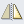

Select Scan/Import in the Navigation Mode screen and click Auto Scan or click Auto Scan in the Scan/Import window to open the Auto Scan screen (Scan/Import window).
Open this window when you want to scan documents by automatically detecting the document type.
(1) Settings and Operation Buttons
(2) Toolbar
(3) Thumbnail Window
Supported Documents
Photos, postcards, business cards, magazines, newspapers, text documents, and BD/DVD/CD.
 Important
ImportantThe following types of documents cannot be scanned correctly. To scan other documents, specify the document type.
- A4 size photos
- Text documents smaller than 2L (5 inches x 7 inches) (127 mm x 178 mm), such as paperback pages with the spine cut off
- Documents printed on thin white paper
- Long narrow documents such as panoramic photos
Reflective disc labels may not be scanned properly.
Place documents correctly according to the type of document to be scanned. Otherwise, documents may not be scanned correctly.
See "Placing Documents" for details on how to place documents.
Scanning takes longer than usual when scanning from the ADF (Auto Document Feeder) for the first time.
When scanning both sides of the documents from the ADF, you can scan A4 or Letter-size documents.
Place documents of the same size when scanning two or more documents from the ADF.
 Note
NoteTo reduce moire, open the "Photos/Documents (Platen) Screen (Scan/Import Window)" and set Document Type to Magazine(Color).
 (View & Use)
(View & Use)
Click this when you want to open images and PDF files saved on your computer. The View & Use window opens.
Auto Scan
Displays the screen for scanning documents by automatically detecting the document type, etc.
Photos/Documents (Platen)
Click this when you want to scan photos, documents, magazines, and other printed materials. The screen for scanning photos and documents appears.
Stack of Documents (ADF)
Click this when you want to scan multiple documents at one time from the ADF. The screen for scanning from the ADF appears.
Memory Card
Click this when you want to import images saved on a memory card. The screen for importing images from a memory card appears.
Document Type
Auto Mode is set.
Specify...
Select whether or not to apply suitable corrections based on the document type.
You can also specify the settings for scanning both sides of the documents automatically from the ADF.
Scan
Scanning starts.
Clear
Delete all images in the Thumbnail window.
NoteImages not saved on a computer will be deleted. To keep important images, use Save or other methods to save them to a computer before clicking Clear.
Save
Save the selected images. Click to open the Save dialog and specify the save settings.
Save as PDF file
Save the selected images as PDF files. Click to open the Save as PDF file dialog and specify the save settings.
Jump to Main Menu
Jumps to the Main Menu.
Preferences
The Preferences dialog opens. In the Preferences dialog, you can make advanced settings to MP Navigator EX functions.
 (Guide)
(Guide)
Opens this guide.
Edit Tools
 (Select All)
(Select All)
Selects all images in the Thumbnail window.
(Cancel All)
Cancels all image selections in the Thumbnail window.
 (Rotate Left)
(Rotate Left)
Rotates the target image (outlined in orange) 90 degrees counter-clockwise.
 (Rotate Right)
(Rotate Right)
Rotates the target image (outlined in orange) 90 degrees clockwise.
 (Invert)
Inverts the target image (outlined in orange) horizontally.
 (Trimming)
(Trimming)
Trims the target image (outlined in orange). "Trimming" is the act of selecting the area you want to keep in a photo and discarding the rest. Click this button to open the Crop window and specify the trimming frame.
 Zoom in
Zoom in
Enlarges the target image (outlined in orange). You can also enlarge the image by double-clicking it.
(Display Size)
Changes the size of images in the Thumbnail window.
(Sort by)
Sorts the images in the Thumbnail window by category or by date (ascending or descending).
Thumbnail Window
Scanned images are displayed.
When you select the checkbox of an image, the image appears in the Selected Images area.
NoteThumbnails may appear as "?" when there is not enough memory to display the images.
Close All / Open All
You can hide or show all images in the displayed categories.
Close All
Hides all images.
Open All
Displays all images.
NoteWhen you click Close All, the button changes to Open All.
(Cancel All)
Cancels the selection of all images in the Selected Images area.
 (Cancel Selection)
(Cancel Selection)
Cancels the selection of the target image (outlined in orange) in the Selected Images area.
Selected Images Area
Images selected in the Thumbnail window are displayed.